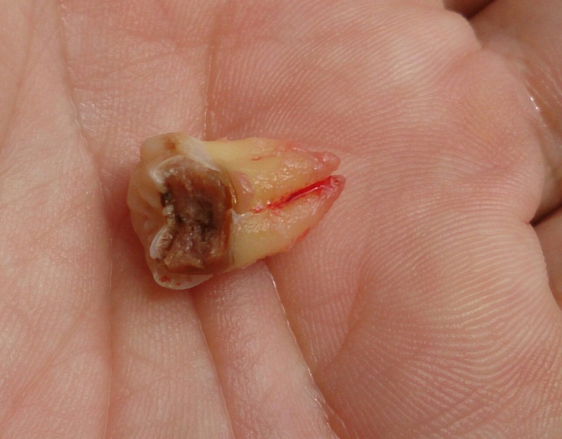
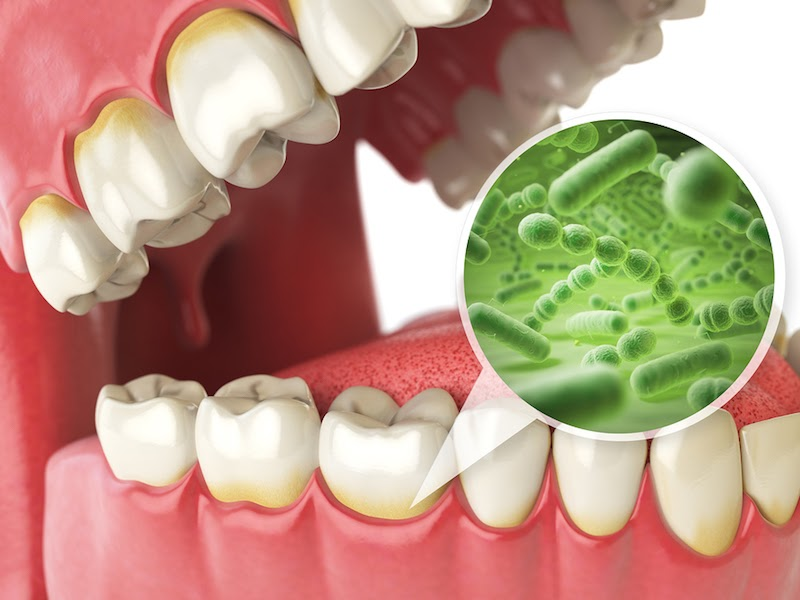
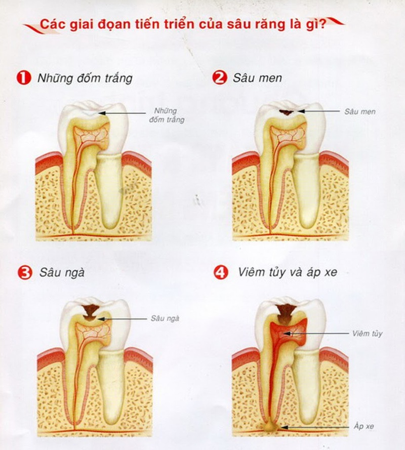
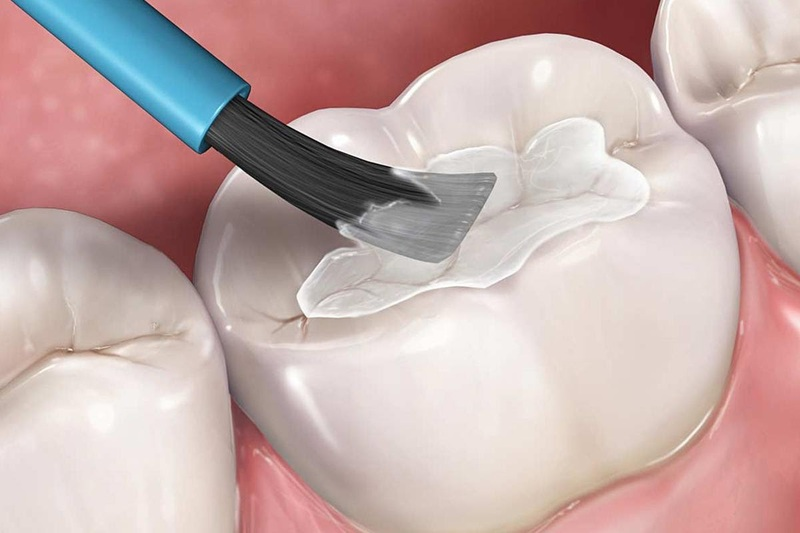
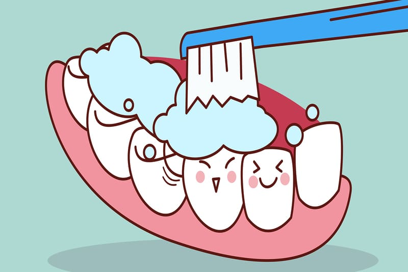

What is tooth decay?

So what is tooth decay? Tooth decay is understood in the simplest way as a cost situation
understand how hard it is. Also known as the cancellation process. These brands do results
microbial growth and activity. Deeper is aformed variable disease on
teeth both in Vietnam and around the world. This is a value of the most normal root in young em. Everyone
have
possibility of infection in infants.
How will directory security take effect? Find out right through the article: “ Signs and
consequences
when the tooth decay is severe? 3 ways to generalize the value of severe caries
”
What is the cause of tooth decay?
Although tooth decay is a common disease, many people still do not have an accurate understanding of this
problem. Even
Many people even think that tooth decay is caused by "worms" that are worms and parasites in the teeth.
Is this a misunderstanding?
rare people get it. So what exactly is tooth decay?

- Plaque is the film on the teeth formed by sugar and starch. They are formed and
Stick on the surface after eating for 15-20 minutes. If not cleaned, they will combine with other
enzyme
It is present in saliva and forms plaque on the surface of teeth. In the long run, plaque will form
lime
teeth, they stick to the gum line and become a breeding ground for bacteria.
- The bacteria that cause tartar reside in the teeth and digest the plaque. They produce acid and
corrode the layer
minerals in tooth enamel. Then gradually eat into the dentin and pulp. Now we will feel the
sensitivity.
- When the bacteria that cause tooth decay thrive. They will cause inflammation and swelling of the
pulp chamber.
What are the stages of tooth decay?
Dental caries does not arise "in one night", they have their own manifestations at each stage. So if
important
If you look closely, you can completely recognize tooth decay early. Tooth decay develops in 4
stages:

- Stage 1: This is the onset of caries. If you look closely on the tooth surface, you will see the
yellowish yellow or milky white spots. This is plaque and tartar. Usually in the stage
At this time, we will hardly be able to detect tooth decay without regular dental care and
examination
often.
- Stage 2: Mutans Streptococci bacteria will take advantage of plaque and tartar as a shelter and
metabolism. This process will produce an acid. They attack and erode tooth enamel.
Corrosion areas will turn black. If you pay close attention, you will feel that your teeth are
more susceptible to irritation
when eating hot, cold, sour food…
- Stage 3: The wormhole will grow wider and deeper. Bacteria attack the dentin layer and pulp,
causing
toothache. The pulp will become inflamed causing pain and bad breath.
- Stage 4 - Myelitis. Bacteria will eat to the pulp of the tooth causing inflammation and death of
the pulp. In this case if
If not treated in time, the bacteria will attack the nerves and jawbone, causing swelling
and osteomyelitis.
How to treat tooth decay?
Depending on the condition of the tooth decay, dentists will have separate treatment methods for each
case.
Here are the 4 most popular tooth decay treatments today:

-
Treatment of caries with Fluoride: In the early stages and mild enamel decay,
Dentists use fluoride to restore damaged enamel. This method uses
Fluoride comes in gel, foam, or liquid form to coat tooth surfaces.
-
Filling: In the case of tooth decay, a relative amount of enamel has been
eroded. In schools
In this case the use of Fluoride will no longer be feasible. Therefore, the dentist will proceed
to remove the enamel
damaged. Then clean and re-fill the deep hole with filling materials used in dentistry
faculty.
-
Porcelain crowns: Indicated in case of weak roots or deep holes but
No effect on tooth pulp. Dentists will use porcelain crowns to cover the cavity of the tooth
Porcelain teeth will help restore decayed teeth and protect the root and
pulp inside.
-
Teeth extraction: This is the worst case scenario when the tooth decay has
attacked and killed the pulp. Copper
When they cause the part of the jaw that surrounds the root of the tooth to become inflamed and
bony. In this case dentists
forced tooth removal, dredging, and deep cleaning.
Good habits to help limit tooth decay
Most of the causes of tooth decay come from personal factors. So, with just small changes in habits,
Eating habits and living habits can help you prevent tooth decay. So good habits help limit
What is tooth decay?

-
Brush your teeth at least twice a day, morning and evening. In addition, flossing
and
mouthwash will help you with optimal hygiene.
- Diet rich in calcium: eggs, milk, seafood.
- Limit starchy foods, sugar and carbonated water.
-
Avoid eating foods that are too hard, which will cause chipping and damage to tooth
enamel.
-
Besides, you should check your teeth periodically at reputable dental addresses every 6
months.
If you need more detailed information, do not hesitate to contact Belleville Dental
immediately for a
consultation
The fastest and most accurate query.
-
Address:8A, Ton That Thuyet, Nam Tu Liem, Ha Noi
-
Website:Belleville Dental
-
Email:Bellevilledental@gmail.com
-
Hotline:012 345 67890